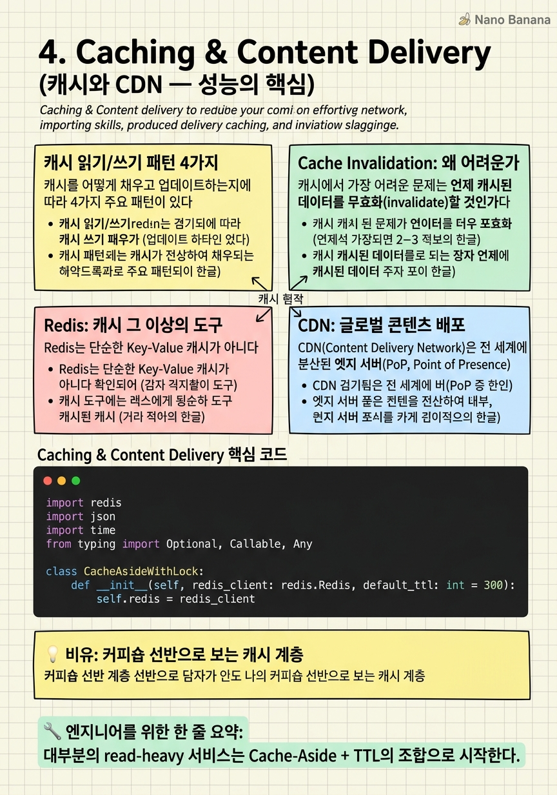

Caching & Content Delivery

🎯 학습 목표
- Cache-Aside, Write-Through, Write-Back, Write-Around의 차이와 적합한 사용 사례를 설명할 수 있다
- Cache Invalidation의 어려움과 일반적 전략을 알고 있다
- Redis의 자료구조(String, List, Set, Sorted Set, Hash)별 사용 사례를 안다
- CDN이 원본 서버 부하를 줄이는 원리와 Cache-Control 헤더를 이해한다
- Thundering Herd와 Cache Stampede를 방지하는 방법을 설명할 수 있다
"컴퓨터 과학에서 가장 어려운 두 가지가 있다: Cache Invalidation과 Naming Things" — Phil Karlton의 이 농담은 캐시가 얼마나 어렵고 중요한지를 보여준다.
캐시는 단순히 빠른 임시 저장소가 아니다. 올바른 캐시 전략은 DB 쿼리를 99% 줄이고, CDN은 원본 서버 트래픽을 95% 줄일 수 있다. 반대로 잘못된 캐시 전략은 Stale Data(오래된 데이터), Cache Stampede(동시 캐시 미스), Cache Poisoning(악의적 데이터 주입) 같은 심각한 문제를 만든다.
이 챕터에서는 캐시 패턴의 종류와 트레이드오프, Redis의 실용적 사용법, CDN의 동작 원리를 다룬다. 특히 Cache Invalidation이 왜 어렵고 어떻게 다루어야 하는지를 집중적으로 다룬다.
핵심 내용
캐시 읽기/쓰기 패턴 4가지
캐시를 어떻게 채우고 업데이트하는지에 따라 4가지 주요 패턴이 있다.
1. Cache-Aside (Lazy Loading)
애플리케이션이 캐시 관리를 직접 담당. 읽기 시 캐시 먼저 확인, Cache Miss 시 DB에서 읽고 캐시에 저장.
- 장점: 실제로 사용되는 데이터만 캐시됨. DB 장애 시 캐시에서 서비스 가능.
- 단점: Cache Miss 시 latency 증가. Cache Stampede 위험. 최초 요청은 항상 느리다.
- 사용: Twitter 타임라인, 사용자 프로필처럼 read-heavy 데이터
2. Write-Through
쓰기 시 DB와 캐시를 동시에 업데이트. 데이터는 항상 최신.
- 장점: 캐시 데이터가 항상 최신. 읽기 시 Cache Miss 없음.
- 단점: 쓰기 latency 증가. 읽히지 않는 데이터도 캐시 → 공간 낭비.
- 사용: 사용자 설정, 자주 수정되고 자주 읽히는 데이터
3. Write-Back (Write-Behind)
쓰기 시 캐시만 업데이트. 캐시에서 DB로의 동기화는 비동기 또는 주기적.
- 장점: 쓰기 latency 최소화. write burst 흡수 가능.
- 단점: 캐시 장애 시 데이터 유실 위험. DB와 캐시 불일치 기간 발생.
- 사용: 좋아요 수, 조회수 같은 데이터 유실을 어느 정도 허용하는 카운터
4. Write-Around
쓰기는 DB로만, 읽기 시 Cache-Aside처럼 동작.
- 장점: 한 번만 쓰는 데이터로 캐시가 오염되지 않음.
- 단점: 읽기 시 초기에 Cache Miss 많음.
- 사용: 로그, 한 번 쓰고 거의 안 읽는 데이터
Cache Invalidation: 왜 어려운가
캐시에서 가장 어려운 문제는 언제 캐시된 데이터를 무효화(invalidate)할 것인가다.
TTL (Time-To-Live) 기반 만료
가장 단순한 방법. 일정 시간이 지나면 자동 만료. Redis의 EXPIRE 명령.
- 장점: 구현 간단.
- 단점: TTL이 짧으면 Cache Hit Rate 낮아짐, 길면 Stale Data 기간이 길어짐.
Event-Driven Invalidation
데이터 변경 이벤트 발생 시 캐시를 직접 삭제. DB 업데이트 후 cache.delete(key) 또는 메시지 큐를 통한 비동기 삭제.
- 장점: 즉각적인 캐시 일관성.
- 단점: Race Condition — DB 업데이트와 캐시 삭제 사이 타이밍 문제.
Write-Through로 동기 업데이트
쓰기 시 캐시와 DB를 동시에 업데이트하여 불일치를 원천 방지.
Cache-Aside의 Race Condition 예시:
쓰레드 A가 DB 업데이트 후 캐시를 삭제하려는 순간, 쓰레드 B가 캐시 미스를 받고 DB에서 이전 값을 읽어 캐시에 저장하면? → 이전 값이 캐시에 남는다. 이 문제를 해결하기 위해 Cache-Aside + TTL을 함께 쓰는 것이 일반적인 해법이다. Invalidation이 실패해도 TTL이 결국 해결한다.
Redis: 캐시 그 이상의 도구
Redis는 단순한 Key-Value 캐시가 아니다. 다양한 자료구조를 지원하는 인메모리 데이터 구조 서버로, 각 자료구조마다 최적화된 사용 사례가 있다.
| 자료구조 | 커맨드 | 사용 사례 | |---|---|---| | String | GET/SET/INCR | 세션, 카운터, 캐시 | | List | LPUSH/RPOP | 메시지 큐, 최근 활동 피드 | | Hash | HGET/HSET | 사용자 프로필 (필드별 접근) | | Set | SADD/SMEMBERS | 유니크 방문자, 팔로워 목록 | | Sorted Set | ZADD/ZRANGE | 리더보드, 점수 기반 정렬 | | HyperLogLog | PFADD/PFCOUNT | 대략적 유니크 카운트 (공간 효율) | | Pub/Sub | PUBLISH/SUBSCRIBE | 실시간 알림, 채팅 |
Redis Sorted Set으로 리더보드 구현:
`
ZADD game:leaderboard 9500 "alice"
ZADD game:leaderboard 8700 "bob"
ZRANGE game:leaderboard 0 9 WITHSCORES REV # Top 10
ZRANK game:leaderboard "alice" # Rank of alice
`
Redis Cluster를 통한 수평 확장:
Redis Cluster는 데이터를 16384개의 hash slot으로 나누고 각 노드가 일부를 담당한다. 자동 샤딩과 failover를 지원한다.
Redis vs Memcached:
| 항목 | Redis | Memcached | |---|---|---| | 자료구조 | 다양 | String만 | | 영속성 | RDB/AOF 지원 | 없음 | | 복제 | 지원 | 없음 | | Cluster | 지원 | 없음 |
현대 시스템에서 Memcached보다 Redis를 선택하는 이유가 명확하다. 단, 단순 캐시만 필요하고 최대 성능이 필요할 때는 Memcached가 미세하게 빠를 수 있다.
CDN: 글로벌 콘텐츠 배포
CDN(Content Delivery Network)은 전 세계에 분산된 엣지 서버(PoP, Point of Presence)에 정적 콘텐츠를 캐시하여, 사용자에게 가장 가까운 서버에서 콘텐츠를 제공하는 인프라다.
CDN이 해결하는 문제:
- 지리적 지연(Geographic Latency) — 한국 사용자가 미국 서버에 직접 요청하면 150ms+ 지연 - Origin 서버 부하 — 전체 트래픽의 95%를 CDN이 처리하면 origin에는 5%만 도달 - DDoS 흡수 — 엣지에서 악성 트래픽 필터링
CDN 동작 흐름:
1. 사용자가 image.example.com/photo.jpg 요청
2. DNS가 사용자에게 가장 가까운 CDN PoP의 IP 반환
3. CDN PoP에 캐시 있으면 즉시 반환 (Cache Hit)
4. 없으면 Origin 서버에서 가져와 PoP에 저장 후 반환 (Cache Miss)
Cache-Control 헤더로 CDN 제어:
`
Cache-Control: public, max-age=86400 # 24시간 CDN/브라우저 캐시
Cache-Control: private, no-cache # CDN 캐시 금지, 브라우저도 재검증
Cache-Control: no-store # 어디에도 저장하지 않음
Surrogate-Control: max-age=604800 # CDN만을 위한 7일 캐시
`
Push vs Pull CDN:
- Push: 콘텐츠 업로드 시 미리 CDN에 배포. 대용량 파일, 변경이 드문 콘텐츠.
- Pull: 사용자 요청 시 처음 한 번만 origin에서 가져와 캐시. 일반적인 웹사이트.
CDN 사용 사례: 이미지, CSS/JS, 동영상 스트리밍(HLS segments), API 응답(일부), 정적 HTML
Thundering Herd와 캐시 고급 패턴
Thundering Herd (Cache Stampede) 는 캐시가 만료되는 순간 수천 개의 요청이 동시에 DB로 향하는 현상이다. 인기 콘텐츠의 캐시가 만료될 때 특히 심각하다.
해결 방법 1: Mutex Lock
첫 번째 Cache Miss 요청만 DB에서 읽고, 나머지는 락을 기다린다. Redis의 SETNX 또는 SET ... NX 명령으로 구현.
해결 방법 2: Probabilistic Early Expiration
캐시 만료 전에 확률적으로 미리 갱신. TTL이 줄어들수록 조기 갱신 확률이 증가하는 XFetch 알고리즘.
해결 방법 3: Background Refresh
캐시 만료 직전 백그라운드에서 미리 새로 고침. 사용자는 항상 캐시된 데이터를 받는다.
Hot Key 문제:
Redis에서 특정 key(예: 인기 아이템 재고)에 초당 수십만 요청이 몰리면 단일 Redis 노드가 병목이 된다.
해결책:
- Local Cache: 애플리케이션 서버의 인메모리 캐시(Caffeine, Guava Cache)를 1차 캐시로 사용
- Key Sharding: item:123:replica_0, item:123:replica_1 처럼 여러 키로 분산
- Read-Through with replica: Read Replica에서 읽기
💡 비유로 이해하기
커피숍에는 세 가지 저장 위치가 있다. 바리스타 손 옆 카운터(L1 캐시 = CPU Cache), 바 위 선반(L2 캐시 = Redis), 창고(DB).
고객이 아메리카노를 주문하면 바리스타는 먼저 손 옆 카운터를 본다. 없으면 선반을 본다. 선반에도 없으면 창고까지 가서 가져온다. 창고를 왕복하는 시간(latency)이 가장 길다. 가장 자주 팔리는 원두는 항상 선반에 놓아두어야 한다.
Cache Invalidation 문제는 이렇다 — 창고에서 원두 등급이 바뀌었는데, 선반에는 여전히 이전 등급의 원두가 있다. 언제 선반을 교체할 것인가? 매일 자동 교체(TTL)? 창고 변경 알림 시 즉시 교체(Event-Driven)? CDN은 전국 각 도시에 분점을 두고 본점(origin)의 원두를 복사해두는 것이다. 서울 분점에서 부산 고객이 주문하면 본점까지 갈 필요가 없다.
💻 코드 예시
Cache-Aside 패턴 + Thundering Herd 방지를 위한 Mutex Lock을 Redis로 구현한다. 실제 프로덕션에서 사용하는 패턴이다.
import redis
import json
import time
from typing import Optional, Callable, Any
class CacheAsideWithLock:
def __init__(self, redis_client: redis.Redis, default_ttl: int = 300):
self.redis = redis_client
self.default_ttl = default_ttl
self.lock_ttl = 5 # Lock expires in 5s to prevent deadlock
def get_or_load(
self,
key: str,
loader: Callable[[], Any],
ttl: Optional[int] = None
) -> Any:
# 1. Try cache first
cached = self.redis.get(key)
if cached:
return json.loads(cached)
# 2. Cache miss — acquire distributed lock to prevent stampede
lock_key = f"lock:{key}"
acquired = self.redis.set(
lock_key, "1",
nx=True, # Only set if Not eXists
ex=self.lock_ttl # Expire lock to prevent deadlock
)
if not acquired:
# Another process is loading — wait and retry
for _ in range(10):
time.sleep(0.05)
cached = self.redis.get(key)
if cached:
return json.loads(cached)
# Fallback: load directly (lock holder may have crashed)
try:
# 3. Load from source (DB, external API, etc.)
value = loader()
# 4. Store in cache
self.redis.setex(
key,
ttl or self.default_ttl,
json.dumps(value)
)
return value
finally:
self.redis.delete(lock_key) # Always release lock
# Usage example
r = redis.Redis(host='localhost', port=6379)
cache = CacheAsideWithLock(r, default_ttl=600)
def fetch_user_from_db(user_id: int) -> dict:
# Simulated DB query (expensive)
return {"id": user_id, "name": "Alice", "email": "alice@example.com"}
user = cache.get_or_load(
key="user:1001",
loader=lambda: fetch_user_from_db(1001),
ttl=300
)
print(user)SET ... NX가 핵심이다. 여러 서버에서 동시에 같은 키가 만료되어도, 첫 번째 요청만 DB 쿼리를 하고 나머지는 0.05초씩 재시도한다. Lock이 죽으면(crash) 5초 후 자동 해제된다. 이 패턴 하나로 Cache Stampede를 방지하면서도 Stale Data를 최소화할 수 있다.
🏭 현업에서의 평가
✅ 시니어가 보는 것
- Cache hit rate를 높이는 전략과 실측 방법을 아는가
- Cache Invalidation의 어려움과 구체적 해결 방법을 아는가
- CDN을 언제 어떻게 활용할지 알고 있는가
- 캐시 레이어가 없을 때 DB 부하를 추정할 수 있는가
⚠️ 레드 플래그
- "Redis를 캐시로 쓰면 됩니다"만 말하고 패턴을 설명 못 함
- Cache Invalidation을 고려하지 않는 설계
- 모든 데이터를 캐시에 넣는 설계 (메모리 한계 무시)
- TTL 없이 캐시 데이터를 영구 저장하는 설계
🎤 예상 인터뷰 질문
- Twitter의 hot celebrity 계정 타임라인 캐시 전략을 설계해봐.
- Cache hit rate가 갑자기 떨어졌다. 어떻게 디버깅하겠어?
- Cache와 DB 사이의 데이터 불일치를 최소화하는 방법은?
✨ 핵심 요약
Cache-Aside가 기본
대부분의 read-heavy 서비스는 Cache-Aside + TTL의 조합으로 시작한다.
Invalidation이 진짜 문제
캐시를 쓰는 것보다 언제 지울지가 더 어렵다. TTL + Event-Driven Invalidation을 함께 써라.
Redis Sorted Set = 리더보드
O(log N)으로 순위를 계산하는 Redis Sorted Set은 리더보드, 타임라인 정렬의 정답이다.
CDN = Origin 부하 95% 절감
이미지, 동영상, 정적 파일은 반드시 CDN으로 서빙하라. Cache-Control 헤더로 세밀하게 제어한다.
Thundering Herd = Mutex Lock
인기 캐시가 만료될 때 동시 DB 쿼리 폭발 방지: Redis SETNX 락으로 첫 요청만 DB에 닿게 한다.
다층 캐시 (Multi-Level Cache)
Local Cache(인메모리) → Redis → DB 순으로 계층을 구성하면 Hot Key 문제도 해결된다.
Write-Back은 카운터에
좋아요 수, 조회수처럼 잦은 쓰기가 있고 약간의 유실을 허용하면 Write-Back이 DB 부하를 대폭 줄인다.
캐시는 DB 복사본이 아님
자주 접근하고 계산 비용이 비싼 데이터를 선택적으로 캐싱한다. 모든 데이터를 캐시에 넣으면 안 된다.